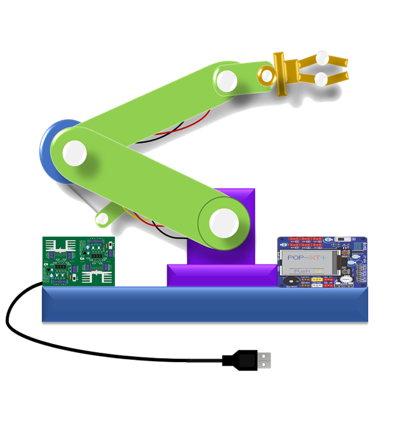

Robòtica
Aquest contingut ve de les primeres versions de Tecnocat, d'abans del 2019. Algunes instruccions, enllaços o versions de programes poden haver quedat desfasats.

Informació genèrica
Arduino
Scratch
Scratch és un projecte que ens permet introduir-nos ala programació de manera gràfica i senzilla.
Mitjançant complements podem programar microprocessadors, com arduino, picaxe, …
- Pàgina del projecte. Exemples i descàrrega del programa.
- Scratch – Arduino a Citilab
- Altres robotsAltres robots alguns amb sistemes propietaris de programació, i comercials.
- Robot Humanoide